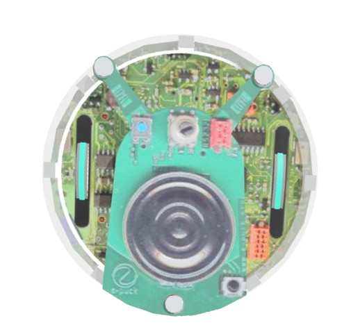
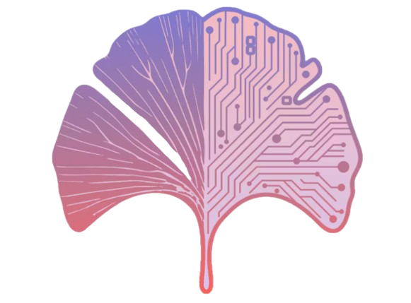
Research Team
Genetic controllers are effective at optimising behaviour in fixed environments, but they encode only what evolution has seen. Even small changes at deployment can cause failure, and covering every possible scenario through evolution alone is computationally expensive and impractical.
Separate genetic memory from lifetime learning. Keep the evolved genome as a fixed foundation, then apply Hebbian plasticity on top, adapting weights on-the-fly without touching the core knowledge.
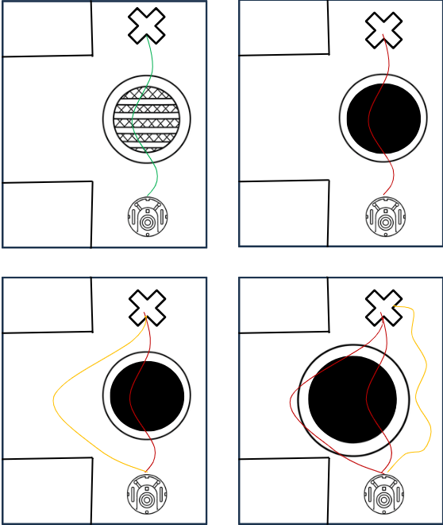
Robot trajectories comparing GA-only vs Hebbian-adapted controllers under base and changed environments. Top row: GA alone. Bottom row: post-evolution Hebbian adaptation.
A dual fitness system combining behaviour fitness and a goal reward. The behaviour components penalise spinning and collision while rewarding forward motion and correct junction turns. The goal reward scales with Euclidean distance to the target position.
Rewards the robot for moving forward. Clamped to [0, 1], negative values (reversing) are treated as zero.
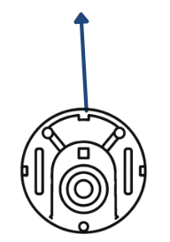
Penalises proximity to obstacles. The cubic exponent gives a sharper penalty as the robot gets closer, given double weight in the combined score.
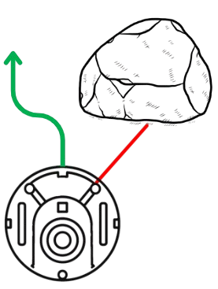
Penalises large velocity differences between wheels. Discourages in-place spinning behaviour that wastes time without progress.
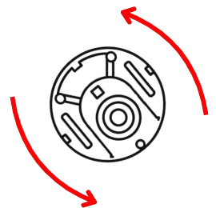
Binary reward at the T-junction. The robot must turn right when light is present and left when absent, the core behavioural objective of the task.
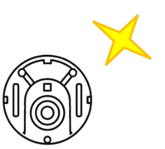
Distance-based reward scaling the robot's proximity to the target position. A cubic scaling makes the reward drop off steeply with distance.
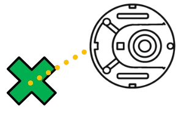
Weighted combination of all four behaviour components. Collision avoidance is given double weight to prioritise safe navigation above all else.
The average of behaviour fitness and goal reward. Balances the quality of movement with whether the robot actually reaches its target.
A T-shaped maze serves as the training and testing environment for the genome's observable states through Hebbian learning. The robot starts at the base of the T, with a light source that appears or disappears depending on the task.
The robot must learn to turn right at the junction when light is present, and left when light is absent. This rule is not hardcoded; it must emerge from the fitness landscape during evolution, and then be preserved or adapted through Hebbian plasticity at runtime.
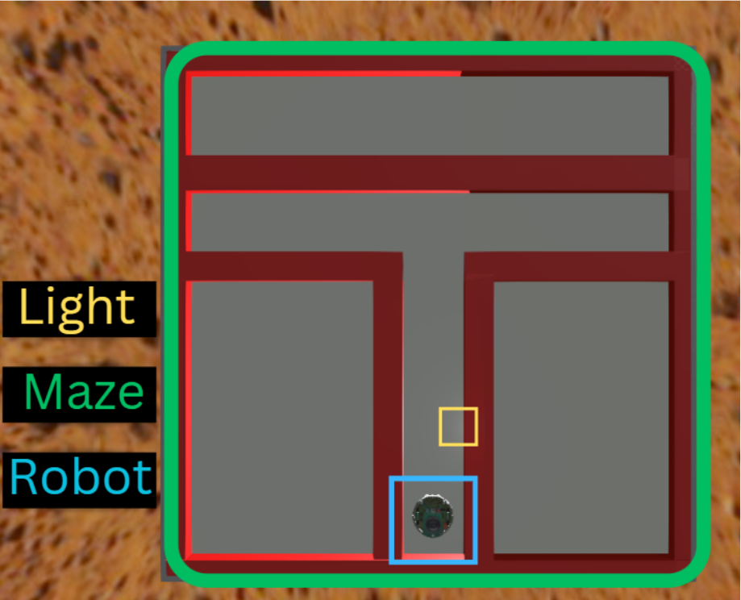
Base environment in Webots. The robot (blue) starts at the T's base. The light source (yellow) determines which direction it must turn at the junction.
The first phase trains a controller through a standard genetic algorithm. The T-maze environment serves as the foundation to evolve an optimal genome for the navigation task. This ensures a solid baseline controller is established before any plasticity is applied.
When the environment changes, even slight modifications can cause the evolved controller to fail. The genome was never trained in the altered environment, and training for every possible variation is computationally expensive. Reusing examples of the same situation can also introduce bias through environmental imbalance.
Neuromodulation is the process of altering nerve activity to normalise nervous system behaviour. Here, the Hebbian learning rate is adaptively scaled using the robot's current fitness as a continuous guiding signal.
The equation scales the maximum signal based on fitness. The max function ensures the rate never drops below 0.2, preventing zero modulation. A robot performing poorly still adapts slowly; a robot performing well strengthens connections faster.
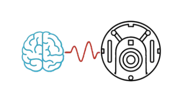
Pre- and post-synaptic activations form a correlation matrix that drives Hebbian trace updates. Raw Hebbian updates can cause unstable weight growth, so a trace decay mechanism discards older correlations to prevent runaway growth.
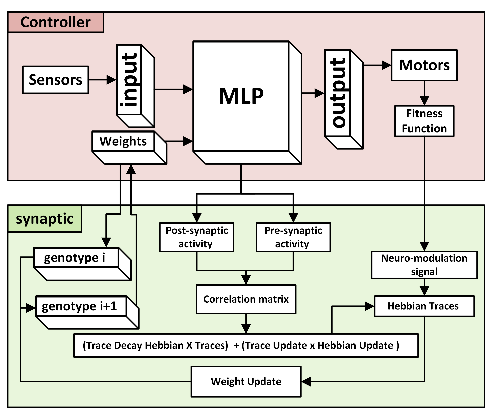
With the evolved genome loaded, Hebbian plasticity activates at runtime. The robot encounters the obstacles it previously failed at, and its synaptic weights begin adapting on-the-fly. The network visualisation shows weight changes as they happen: small flashes indicate minor adjustments, green flashes mark significant positive reinforcement of successful pathways, and orange marks significant negative changes weakening unhelpful connections.
Hebbian plasticity lets the robot successfully complete the task on the first attempt in environments it has never trained in. By creating a new observable state of the genome within the same lifetime, without rewriting a new generation, the same code solves both obstacle configurations.
The experiments compare the GA-only controller against the Hebbian-adapted controller across three environments: the base training environment, and two unseen obstacle configurations. Key measures are task success, time to reach the goal, path length, speed, position error, and average weight change magnitude.
Worth noting: the GA controller did avoid some obstacles in certain runs. This is part of how the genetic algorithm works, the evolved behaviour can sometimes generalise partially to new situations. However it is not predictable or reliable. The Hebbian controller, adapting a live network on the same fitness signal it was trained on, performs more consistently, but this does not guarantee 100% success in all cases either. The improvement is real but the system is still probabilistic.
| Base GA | 2 Obstacles GA | 4 Obstacles GA | ||||
|---|---|---|---|---|---|---|
| Left | Right | Left | Right | Left | Right | |
| Success (0/1) | 1 | 1 | 0 | 0 | 0 | 0 |
| Time-to-Goal (s) | 213.82 | 174.62 | Failed | Failed | Failed | Failed |
| Path Length (m) | 0.9114 | 0.8854 | 0.6195 | 0.7298 | 0.6190 | 0.5520 |
| Average Speed (m/s) | 0.0036 | 0.0035 | 0.0025 | 0.0029 | 0.0025 | 0.0022 |
| Final Position Error | 0.0221 | 0.0319 | 0.2592 | 0.1225 | 0.2592 | 0.3428 |
| Base Hebbian | 2 Obstacles Hebbian | 4 Obstacles Hebbian | ||||
|---|---|---|---|---|---|---|
| Left | Right | Left | Right | Left | Right | |
| Success (0/1) | 1 | 1 | 1 | 1 | 1 | 1 |
| Time-to-Goal (s) | 192.32 | 156.77 | 192.29 | 156.48 | 191.26 | 161.25 |
| Path Length (m) | 0.8915 | 0.8828 | 0.8915 | 0.8836 | 0.8893 | 0.8813 |
| Average Speed (m/s) | 0.0036 | 0.0035 | 0.0036 | 0.0035 | 0.0036 | 0.0035 |
| Final Position Error | 0.0233 | 0.0327 | 0.0232 | 0.0327 | 0.0233 | 0.0327 |
| Weight Change Mean | 2.9702 | 2.5906 | 3.0132 | 2.6165 | 3.1106 | 2.6973 |
Each plot shows how weight change magnitude correlates with fitness and distance sensor response across different runs. The pattern of weight changes reflects the robot actively adapting its synaptic connections in response to its environment. More obstacles produce more weight activity, confirming the Hebbian mechanism is responding to environmental complexity rather than noise.
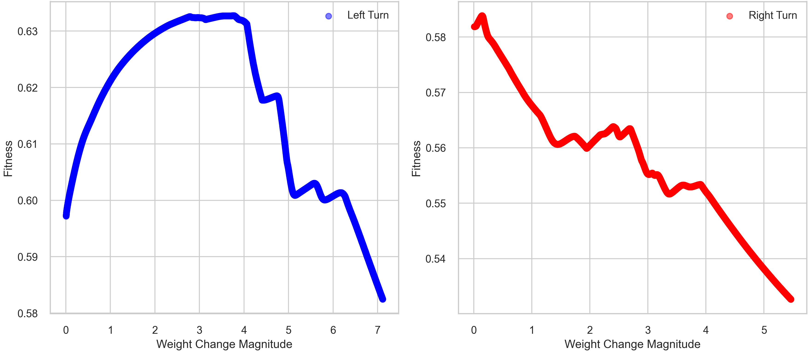
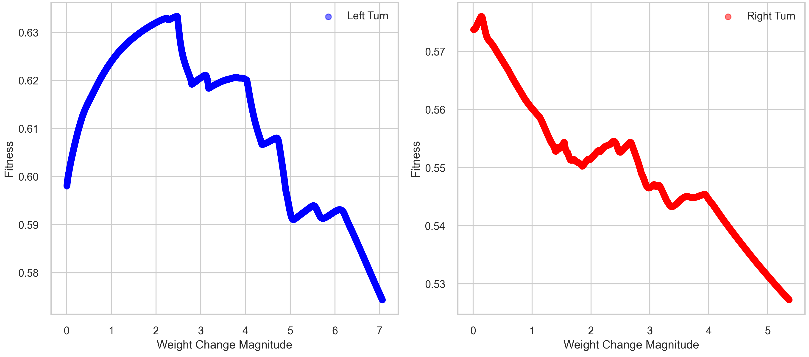
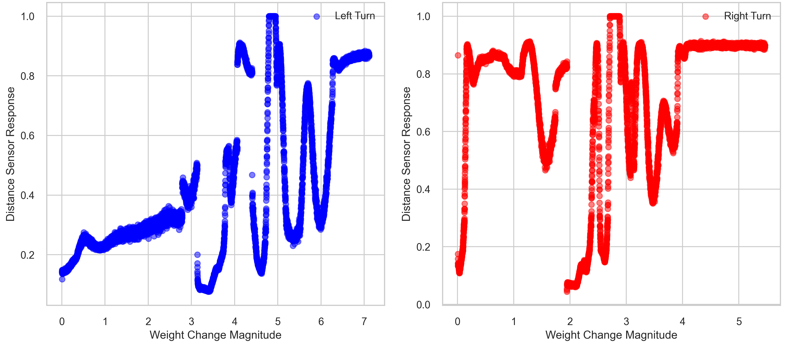
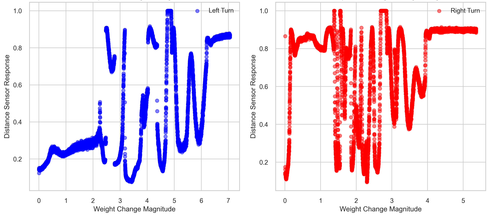
The same genome trained in a high-luminosity environment is then deployed in a low-light setting. The altered light sensor readings cause the genetic controller to fail at the junction task. Hebbian plasticity adapts the synaptic weights on-the-fly, recovering the correct behaviour without any retraining.
Since this experiment involves more persistent environmental changes rather than physical obstacles, a higher adaptation scale was needed. A higher Hebbian learning rate allows the network to respond more quickly to the shifted light distribution, but at the cost of more erratic and less controlled behaviour.
The results sit at the intersection of evolutionary robotics and biological learning theory. Several broader implications emerge from the architecture, each grounded in how biological systems separate memory from adaptation.
Starting with a fixed genotype at birth, the robot performs its task within a lifetime of Hebbian learning. This raises performance without changing the inherited genotype, reacting to what the initial gene cannot resolve. When the genome is passed to the next generation it does not inherit the plasticity changes. The lifetime reset prevents genetic assimilation, keeping the core memory clean and generalisable.
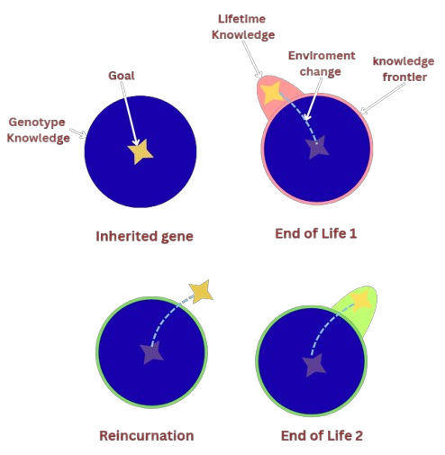
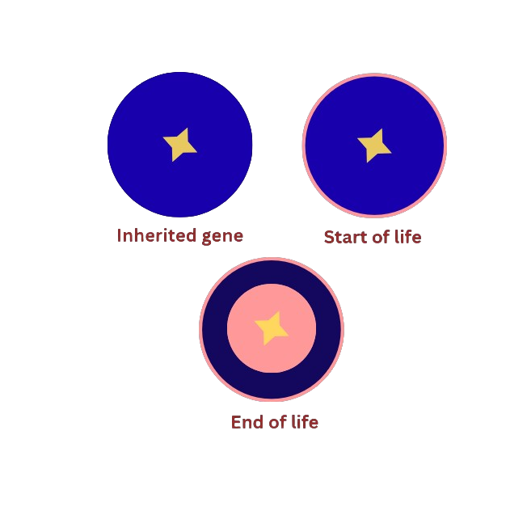
The benefit of Hebbian adaptation is not limited to environmental change. Even in stable environments, it can temporarily make the initial gene more optimal. However the plasticity changes are still not saved post-reincarnation, even if they improve performance. Preserving them would accumulate bias over generations, degrading the generality of the core genome.
If offspring inherit plasticity changes, over generations a bias toward specific environmental changes accumulates. The reset ensures core knowledge stays intact and remains adaptable. It also prevents the genome from becoming overfitted to a single environment, keeping it light enough for zero-shot adaptation wherever it is deployed.
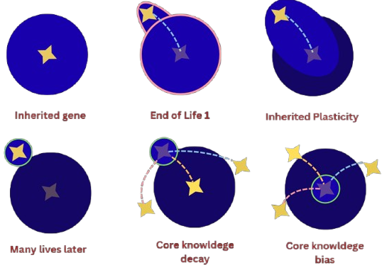
The current implementation uses a static maximum Hebbian learning rate, manually tuned per experiment. Neuromodulation already scales learning using fitness, but it is missing the environmental magnitude of change as a signal. A large rate in an already-familiar environment causes overreaction. A rate too small for a large environmental shift means the robot adapts too slowly within the trial.
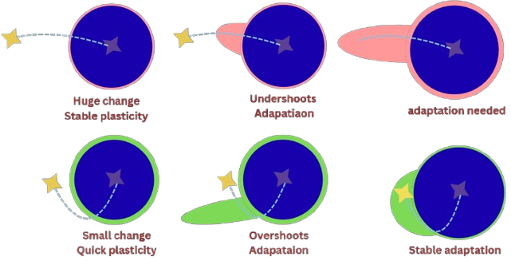